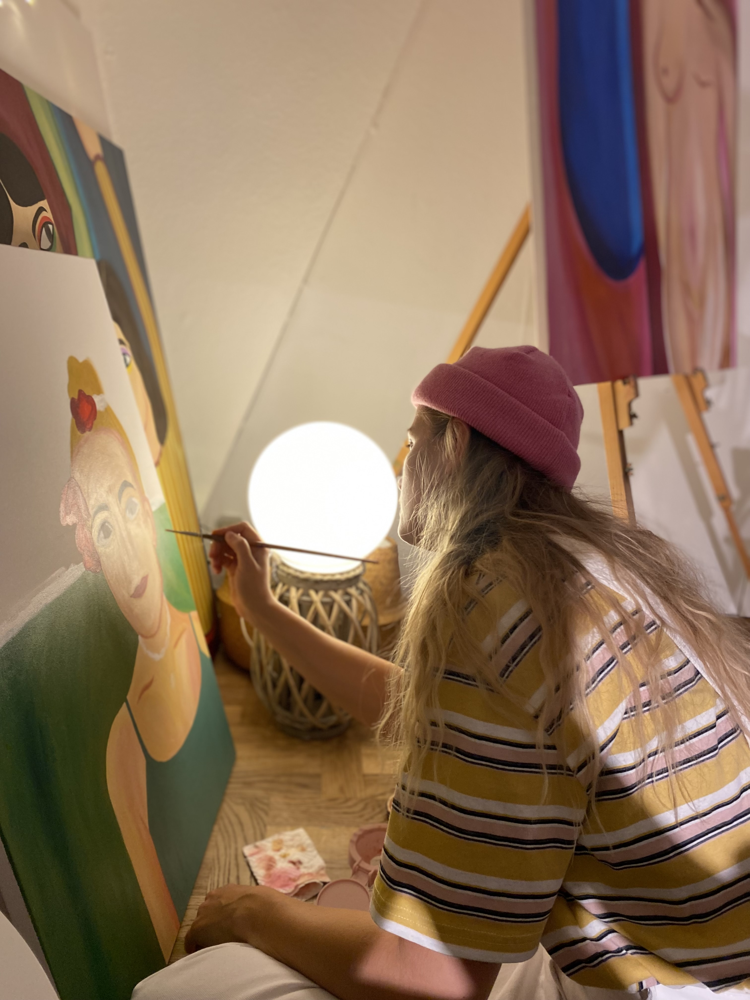
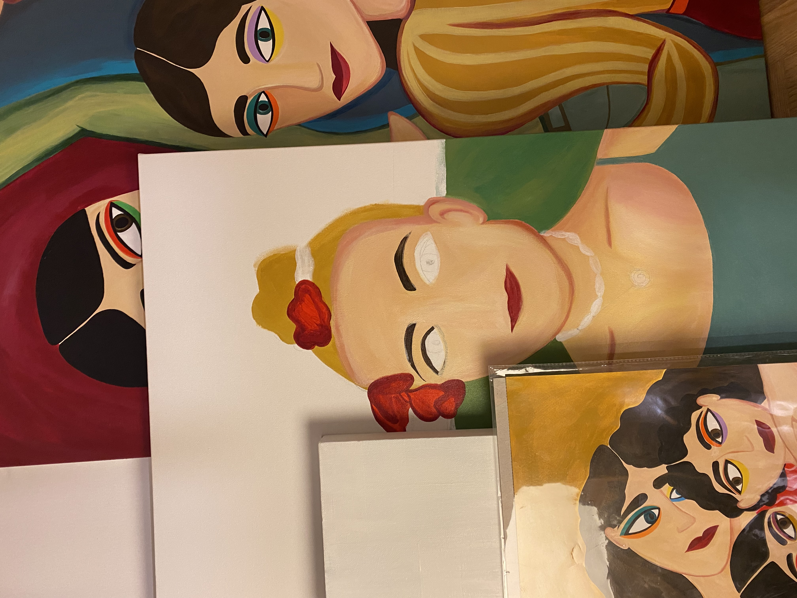
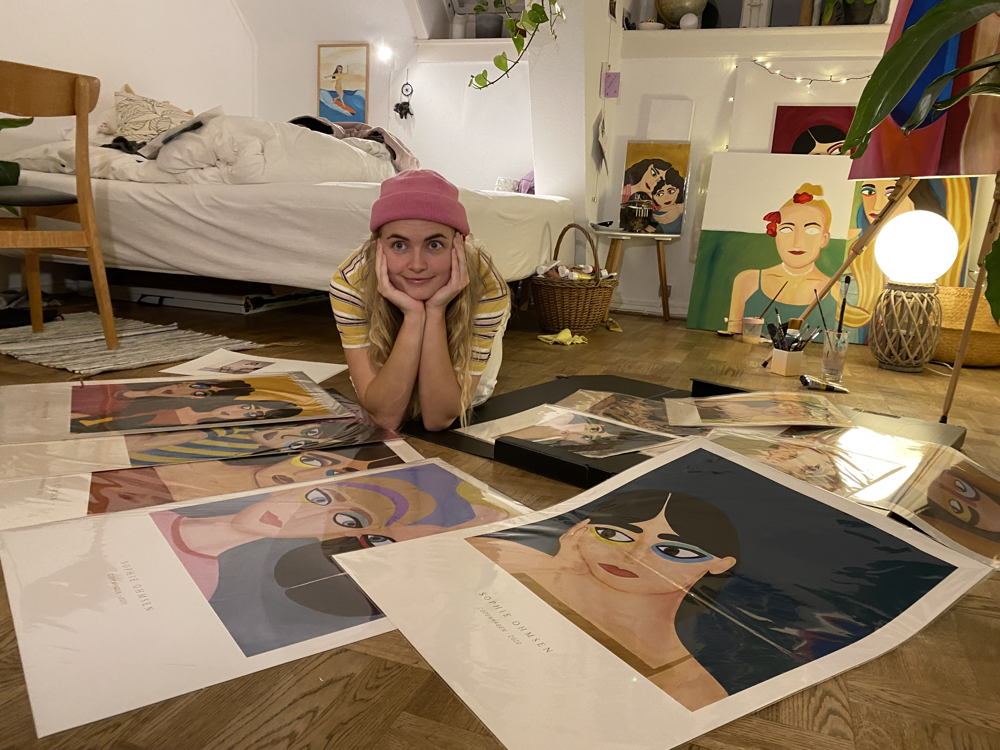
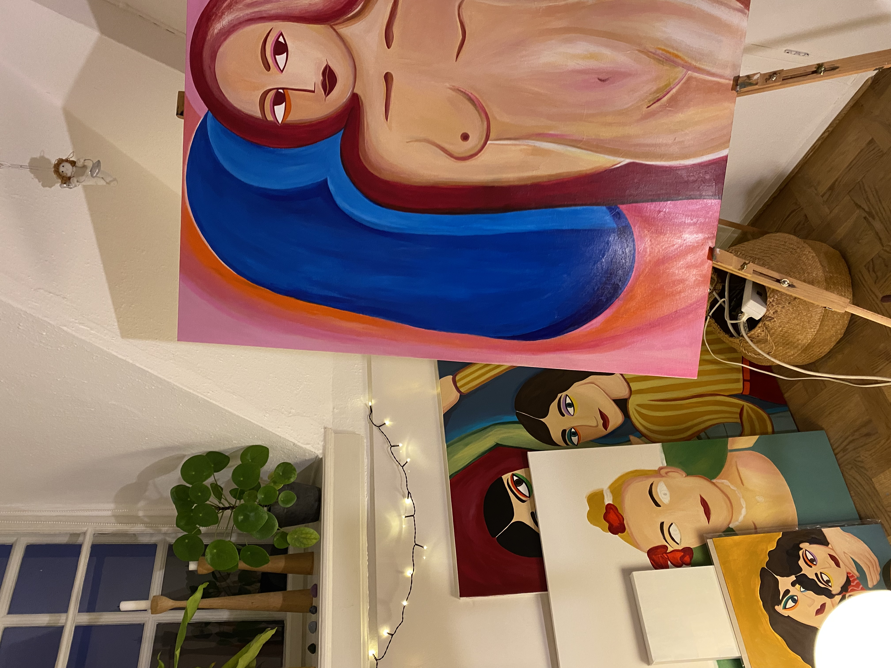
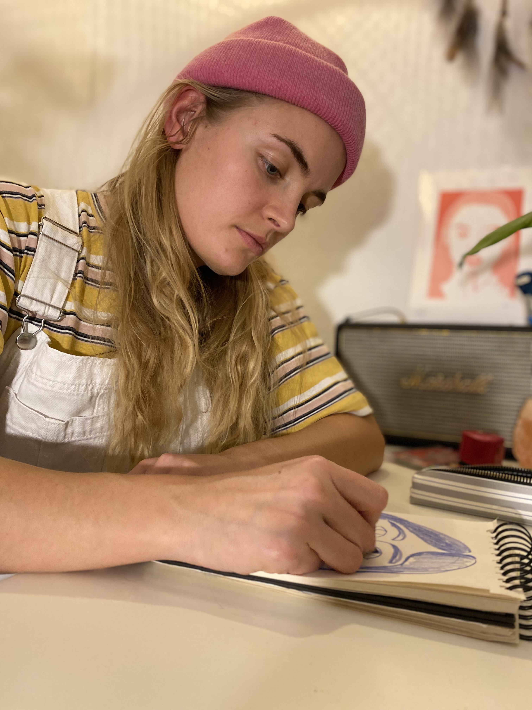
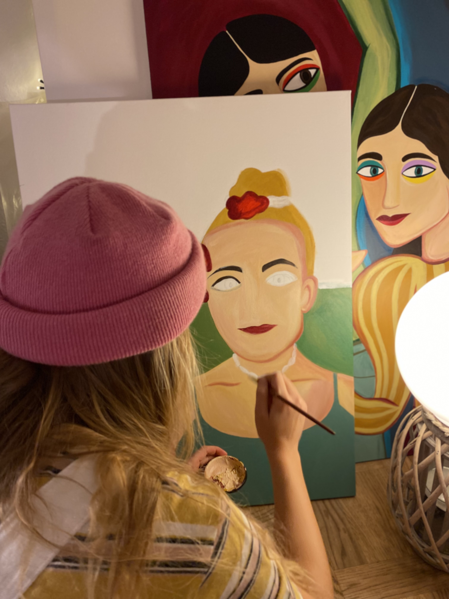
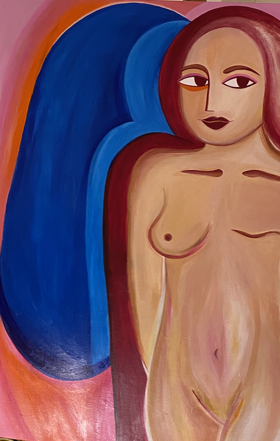

Sophie
Ohmsen
Sophie Ohmsen bor i et koliktiv på østerbro hvor hun på sit eget værelse har sit helt eget kunst univers. Igennem sin kust får hun udtrykt de følelser vi mennesker gennemgår både til daglig og hele vores liv. Til dagligt bruger hun tid på er styrre sin egen kunst virksomhed, derudover er hun uddannet fysioteraput og studere multimediedesign. Igennem hendes arbejde som fysioteraput møder hun mange mennesker med udfordringer og kommer helt tæt på folks følelser og finder derfor stor inspiration i dem og sin egene. Multimediedesign uddanelsen vil hun bruge til at udvikle på sin kust virksomhed.







